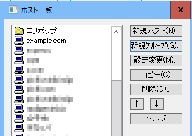
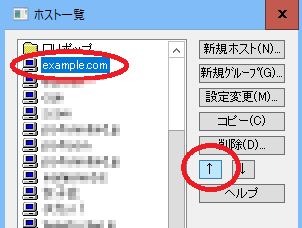

FTP接続によるアップロード方法
パソコン上で作成したファイルをレンタルサーバーへアップロードする際、FTP接続で転送すると便利です。無料ホームページでも有料のレンタルサーバーでも、たいていはこのFTP接続を利用することができます。
このFTP接続の無料ツールはさまざまありますが、一番有名なソフトにFFFTPがあります。
Sota's Web Page (FFFTP)（※Windows用）
ホームページ作成ソフトを何も持ってない場合は、こちらのFFFTPを利用されるとよいでしょう。
また、Macの場合は「FileZilla Client」が使いやすいです。
FileZilla - The free FTP solution
一方、有料のホームページソフトを購入した場合、付属機能としてFTP接続を利用できますので、特に無料ツールを用意する必要はありません。
例えば、DreamweaverなどのソフトでFTP設定をしておけば、パソコン内のファイルをサーバー側と同期することができます。
ホームページ作成ソフトのFTP接続については、お使いのソフトのマニュアル等をご参照ください。このページでは無料ツールのFFFTPの使い方についてご紹介します。
FFFTPの初期設定
このページでは無料ソフトのFFFTPを例にご紹介します。
まずはFFFTPをパソコンにインストールして起動したのち、「新規ホスト」をクリックして初期設定をします。こちらには、レンタルサーバーや無料ホームページサービスから通知された情報を確認しながら設定していくとよいでしょう。
このなかで正確に記入する必要がある箇所は赤丸の３つです。
「ホストの設定名」は適当に記入してもかまいませんが、「ホスト名」と「ユーザー名」、「パスワード」については正確な情報を設定する必要があります。
ホスト名（アドレス）
こちらはアクセス先となるFTPサーバーのことですが、サーバー会社側から通知される「ドメイン名」か「ipアドレス」をそのまま記入します。ユーザー名・パスワード
こちらもレンタルサーバー側からメールなどで通知されているはずです。もしくは、ヘルプを参照すれば、たいていは設定方法が掲載されています。
この赤丸の３つの情報については、レンタルサーバーを契約した際、サーバーの準備が完了したあとの最初のメールに記載されていることが多いです。
【例：さくらインターネット】
【例：wappy】
あるいは、ウェブ上の管理画面などで確認するケースもあります。
【例：コアサーバー】
【例：FC2無料ホームページ】
【例：ヤフージオシティーズ】

いずれにしても、FTP接続の設定に関する情報が必ずあるはずですので、送信されてきたメールなどを確認してみることをおすすめします。
その他、最初の「ホストの設定名」の箇所は自分で把握しやすくするためのものですので、分かりやすい任意の名前をつけておきましょう。
また、「ローカルの初期フォルダ」ですが、ローカルというのは自分のパソコン側のことで、「ホスト側の初期フォルダ」はネット上のレンタルサーバー側のことを意味しています。
接続するたびにファイルの場所を探して開くのは面倒なため、パソコン上のホームページファイルのある場所やデスクトップなどを指定しておくと便利ですが、こちらは特に指定しなくても接続することはできます。
ファイルのアップロードの仕方
実際にFFFTPでファイルをアップロードする際、左側にあるローカル側（パソコン側）のファイルを選び、右側のサーバー側に転送します。
左上の黄色いフォルダマークをクリックしたのち、PC上にある「アップロードしたいファイル」とサーバー側の「転送先のフォルダ」を選択しましょう。
例えば、デスクトップに転送したいファイルがある場合、左側の箇所で「C:\Users\ユーザー名\Desktop」などを開いて転送したいファイルを選び、青色の矢印のアップロードマークをクリックすると転送することができます。
転送先のサーバー側のフォルダについては、「public_html」や「www」、あるいは「httpdocs」などが一般的ですが、レンタルサーバーによって転送先は異なるため、ヘルプページなどを確認してみることをおすすめします。
ファイルの転送が終了すると右側にアップロードしたファイルが反映されます。
複数のファイルを一括で転送する場合には「シフトキー」を押しながら複数を選択して転送します。大量のファイルを一括で転送する際、格安サーバーの場合はエラーで中断してしまうケースが多いため、小分けにして転送することをおすすめします。
また、転送モードには「アスキー」と「バイナリ」の違いがありますが、デフォルトの状態では自動で判別してくれる「ファイル名で転送モード切替え」の設定になっています。特に問題のない場合には、デフォルトのまま利用することをおすすめします。
FFFTP「ホスト一覧」のフォルダ分け
複数のサイトを運営している場合、FFFTPの接続先が煩雑になってきますので、フォルダ分けをして整理しておくと便利です。
このフォルダ分けをする場合、「新規グループ」の箇所からフォルダ名を入力します。
例えば、レンタルサーバーごとにサイトを管理する場合、「ロリポップ」などと入力してフォルダを作成します。

次に、作成したフォルダに入れておくサイトを選択して反転させ、右側の矢印「↑」でそのフォルダまで移動させます。

すると選択したサイトがフォルダ内に移動されます。
同じように、複数のサイトをフォルダに移動して管理しておくとよいでしょう。
このように、レンタルサーバーごとにフォルダ分けをしておくとわかりやすくなります。
ほか、サイトのカテゴリごとにフォルダ分けをしたり、更新頻度の高い順にフォルダわけをしておくと便利です。